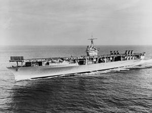
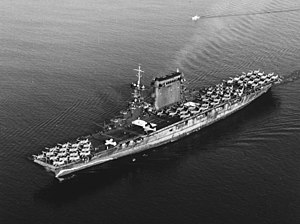
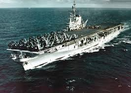
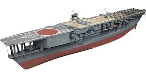
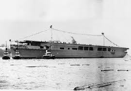
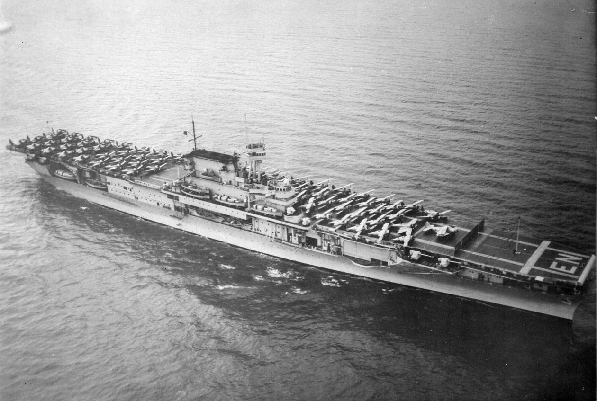

| Ships |
Image |
Top Speed |
When Build |
When Sunk |
Country |
Builder |
| USS Ranger |
 |
29.3 Knots . |
February 25, 1933 . |
--Unknown-- . |
United States . |
Drydock Co . |
| USS Lexington |
 |
33.25 Knots . |
October 3, 1925 . |
May 8, 1942 . |
United States . |
Fore River Shipbuilding . |
| USS Midway |
 |
33 Knots . |
March 20, 1945 . |
--Unknown-- . |
United States . |
Newport News Shipbuilding . |
| Kaga!!!! |
 |
28 Knots . |
November 17, 1921 . |
--Unknown-- . |
Japan . |
Kawasaki . |
| Graf Zeppelin!!! |
 |
33.8 Knots . |
December 8, 1938 . |
August 16, 1947 . |
Germany . |
Deutsche Werke . |
| USS Enterprise!!!!!! |
 |
32.25 Knots . |
October 3, 1936 . |
--Unknown-- . |
United States . |
Newport News Shipbuilding . |